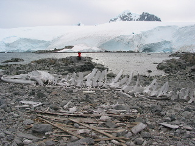

Day 5 — 2003/01/29
First landing: Port Lockroy
Not really much to say here. Gentoos, whale bones, and a British base that is now a museum and gift shop.
Also, saw a small yacht. The guides went out and talked with them, turns out they were three people from near Scotland that sailed to Greenland. After they got there, they decided to sail to Antarctica.
Second Landing: Danco Island
Was going to land at Cuverville Island but the weather there was too bad. The wind was measured at 35 knots. So we went to Danco Island. Climbed up to the top of the island, 150 meters up. That was a heck of a hike, but the view from the top was worth it. Took a panoramic here too.
Then we cruised around in the zodiac. Also found an ice burg that was an amazing shade of blue, and had what looked like a tiny bay in it. So the zodiac driver turned off the motor and let the boat drift into the “bay” of the ice burg.